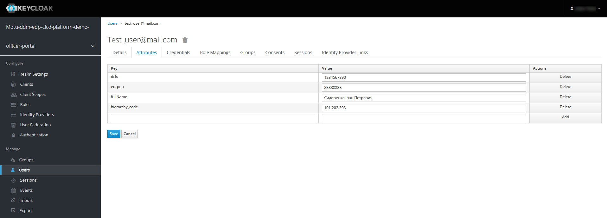
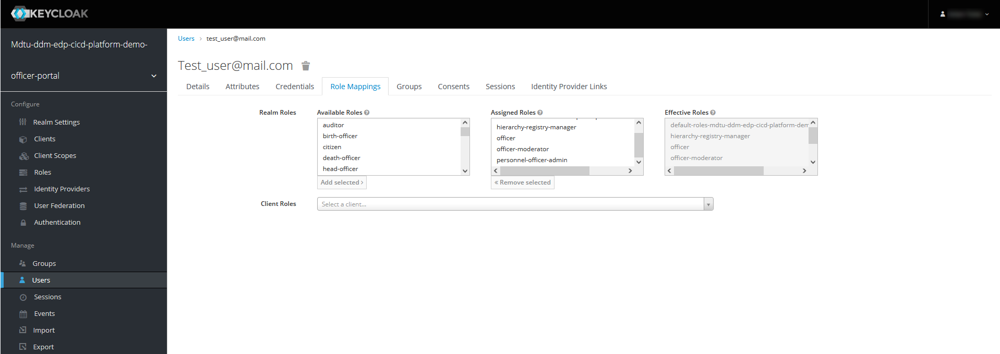

Hierarchical model
1. Overview
The Platform for state registries enables you to build a hierarchical model where access to data objects corresponds to the hierarchy structure levels and user roles. This way, you can control access to objects based on their hierarchical position and the user’s role.
In the hierarchical model, each unit has a unique code (structure_code) that identifies it within the system. In addition, the system uses a surrogate key (hierarchy_code), which is formed by concatenating the unit code and the code of each parent level in the hierarchy. For example, 101.202.303 is a surrogate key for accessing the objects of the third-level subdivision in the hierarchy.
The hierarchy_code attribute in the Keycloak user management system determines the user’s affiliation with a hierarchy node. This attribute must match the unit’s surrogate key in the registry database. This way, you can correctly assign roles and restrict user access to the corresponding hierarchy levels.
It is important to note that hierarchy_code is a mandatory attribute for officers in the Keycloak system if such a person is to perform functions within the hierarchical structure. This allows you to determine each officer’s affiliation and access restrictions accurately.
|
You can assign the hierarchy attribute to users directly in the Keycloak service interface or by importing data from a CSV file.
The following roles are provided to make working within the hierarchical structure and managing personnel using this model more effective:
-
hierarchy-registry-manager: Registry manager; an officer responsible for managing the hierarchical structure of the registry. -
hierarchy-registry-user: Registry user; an officer who has access to the hierarchical structure and can perform tasks within their authority. -
personnel-officer-admin: Personnel officer; an officer responsible for personnel management, including appointing and updating roles of other officers. -
officer-moderator: Moderator; an officer who moderates the process of officers' auto-registration in the registry. A moderator is responsible for checking and approving registration requests from new users.
These roles are meant to help you control the hierarchical structure of your registry, manage personnel, and ensure proper organization and data access.
2. Action plan for using a hierarchical model in the registry
Use the following roadmap to set up and use the hierarchical model in the registry:
-
Use reference examples of regulations modeling. Deploy your copy of the registry demo.
-
For details on deploying a registry demo and getting regulations modeling samples, see Deploying demo registry with reference examples.
-
Samples of the reference data model, business processes, and UI forms are available in the regulations files with a
reference-prefix or in the reference folders if there are several grouped modeling examples.
-
3. Building the hierarchy structure
-
Plan and create a hierarchical structure consisting of several levels and nodes. Let’s call them units.
-
Assign a unique hierarchy code (
structure_code) to each unit.A reference example of a hierarchical structure
Table 1. Matching structure_code with hierarchy_code
Unit name Unit code (structure_code) Surrogate key (hierarchy_code) Note Ministry of Economy of Ukraine
101
101
Hierarchy root node
Department of Trade Agreements and Export Development
201
101.201
Division of Public Policy in the field of Public Material Reserve
202
101.202
Department of Labor and Employment
203
101.203
Department of Labor
301
101.203.301
Department of Industry and High-Risk Facilities Supervision
302
101.203.302
Ministry of Digital Transformation of Ukraine
102
102
Hierarchy root node
State Center of Informational Resources of Ukraine
204
102.204
State Enterprise "Diia"
205
102.205
Ministry of Internal Affairs of Ukraine
103
103
Hierarchy root node
National Police of Ukraine
206
103.206
State Border Guard Service of Ukraine
207
103.207
State Migration Service of Ukraine
208
103.208
Office for Management of Places of Temporary Accommodation of Foreigners
303
103.208.303
Office for Management of Places of Temporary Accommodation of Refugees
304
103.208.304
State Emergency Service of Ukraine
209
103.209
Ministry of Communities and Territories Development of Ukraine
104
104
Hierarchy root node
State Agency for Tourism Development of Ukraine
210
104.210
State Agency on Energy Efficiency and Energy Saving of Ukraine
211
104.211
State Aviation Administration of Ukraine
212
104.212
State Service for Maritime, Inland Waterway Transport and Shipping of Ukraine
213
104.213
State Service of Ukraine for Transport Safety
214
104.214
State Agency for Reconstruction and Development of Infrastructure of Ukraine
215
104.215
Department of Restoration of Infrastructure of Ukraine
305
104.215.305
Department of Development of Infrastructure of Ukraine
306
104.215.306
Office of Infrastructure Development of Ukraine
401
104.215.306.401
4. Building the data model
-
Plan and create a logical data model for your hierarchical structure. As an example, consider the following table structure:
Figure 1. An ERD diagram of the logical model based on the reference structureNotes on the table structure of the reference hierarchical model
-
The
officerstable contains information about officers, their roles, identification data, and affiliation with specific units:-
officers_id: A unique officer ID (UUIDtype). -
user_name: User’s name in Keycloak (TEXTtype). -
full_name: User’s full name (TEXTtype). -
drfo: User’s RNOKPP code (TEXTtype). -
edrpou: User’s EDRPOU code (TEXTtype). -
realm_roles: A list of user’s regulations roles (TEXTtype). -
work_start_date: Work start date (DATEtype). -
unit_name: Unit’s name in the hierarchy (TEXTtype). -
hierarchy_code: A surrogate key based onstructure_codeusing concatenation (TEXTtype). -
structure_code: A unique hierarchy code of a corresponding unit (TEXTtype). -
selfregistration_decision: Moderator’s decision on self-registration (BOOLEANtype).
-
-
The
unittable contains information about units:-
id: A unique unit ID (UUIDtype). -
unit_name: Unit’s name in the hierarchy (VARCHAR(255)type). -
structure_code: A unique hierarchy code of a corresponding unit (VARCHAR(255) type). -
hierarchy_code: A surrogate key based onstructure_code(VARCHAR(255)type).
-
-
The
document_registrationtable contains information about the documents associated with a specific unit:-
id: A unique document ID (UUIDtype). -
name: Document name (TEXTtype). -
unit_id: The ID of the unit to which the document belongs. This corresponds to the ID in theunittable (UUIDtype).
-
Note that all UUID fields use the
uuid_generate_v4()function to generate unique default values. -
-
Create a physical data model based on your logical model.
Example 1. A physical data model for the hierarchical structure of units in the registryThe "officers" table
<changeSet author="registry owner" id="table officers"> <createTable tableName="officers" ext:historyFlag="true" remarks="A list of officers"> <column name="officers_id" type="UUID" defaultValueComputed="uuid_generate_v4()"> <constraints nullable="false" primaryKey="true" primaryKeyName="pk_officers_id"/> </column> <column name="user_name" type="TEXT" remarks="Keycloak username"> <constraints nullable="false"/> </column> <column name="full_name" type="TEXT" remarks="User's full name"> <constraints nullable="false"/> </column> <column name="drfo" type="TEXT" remarks="User's RNOKPP code"> <constraints nullable="false"/> </column> <column name="edrpou" type="TEXT" remarks="User's EDRPOU code"> <constraints nullable="false"/> </column> <column name="realm_roles" type="TEXT" remarks="A list of user's regulations roles"/> <column name="work_start_date" type="DATE" remarks="Work start date"/> <column name="unit_name" type="TEXT" remarks="Unit's name in the hierarchy"/> <column name="hierarchy_code" type="TEXT" remarks="A surrogate key based on structure_code"/> <column name="structure_code" type="TEXT" remarks="A unique hierarchy code of a corresponding unit"/> <column name="selfregistration_decision" type="BOOLEAN" remarks="Moderator's decision on self-registration"/> </createTable> </changeSet>The "unit" table
<changeSet id="24569-1" author="ek"> <comment>CREATE TABLE unit</comment> <createTable tableName="unit" ext:historyFlag="true"> <column name="id" type="UUID" defaultValueComputed="uuid_generate_v4()"> <constraints nullable="false" primaryKey="true" primaryKeyName="pk_unit_id"/> </column> <column name="unit_name" type="VARCHAR(255)" remarks="Unit's name in the hierarchy"> <constraints nullable="false"/> </column> <column name="structure_code" type="VARCHAR(255)" remarks="A hierarchy code of a corresponding unit"> <constraints nullable="false" unique="true"/> </column> <column name="hierarchy_code" type="VARCHAR(255)" remarks="A surrogate key based on structure_code"> <constraints nullable="false" unique="true"/> </column> </createTable> </changeSet>The "document_registration" table
<changeSet id="24569-2" author="ek"> <comment>CREATE TABLE document_registration</comment> <createTable tableName="document_registration" ext:historyFlag="true"> <column name="id" type="UUID" defaultValueComputed="uuid_generate_v4()"> <constraints nullable="false" primaryKey="true" primaryKeyName="pk_document_registration_id"/> </column> <column name="name" type="TEXT" remarks="Document name"> <constraints nullable="false"/> </column> <column name="unit_id" type="UUID"> <constraints nullable="false" foreignKeyName="fk_document_registration_unit_id" referencedTableName="unit" referencedColumnNames="id"/> </column> </createTable> </changeSet>-
When creating a new structure, you can create the table with the organizational structure when deploying the regulations, but at least one parent node in the hierarchy must be created.
-
When an application is created, a hierarchy code with a surrogate key of the BP initiator is automatically added to it.
-
5. Creating RLS rules for data access
RLS (Row-Level Security) rules are used to control access to data rows in the database. In our hierarchical model, RLS rules restrict user access to data objects depending on the hierarchy level these objects belong to.
Each RLS rule checks the value of the hierarchy_code attribute in the user’s JWT (JSON Web Token) and compares it to the values of the hierarchy_code column in a specific database table. If the values match, the user can access the corresponding data objects.
You can set rules for tables or table views (search conditions).
You can use different types of RLS rules to control table access based on the value of the hierarchy_code JWT attribute and the hierarchy_code column.
|
Configure changeSets to add rules after the appropriate tables or search conditions to which the rules should be applied. |
As an example, let’s apply RLS rules to a test table.
<changeSet id="create_table_test_table" author="author_name">
<comment>CREATE table test_table</comment>
<ext:createTable tableName="test_table" ext:historyFlag="true">
<ext:column name="id" type="int"/>
<ext:column name="name" type="varchar(255)"/>
<ext:column name="hierarchy_code" type="varchar(255)"/>
</ext:createTable>
</changeSet><ext:addWriteRule>: A rule to add write permissions.
<changeSet id="test_table_rls1" author="registry owner">
<ext:rls name="write_rls1">
<ext:addWriteRule
name="writeRule1"
jwtAttribute="hierarchy_code"
checkColumn="hierarchy_code"
checkTable="test_table"/>
</ext:rls>
</changeSet><ext:removeWriteRule>: A rule to remove the write rule.
<changeSet id="test_table_rls2" author="registry owner">
<ext:rls name="write_rls1">
<ext:removeWriteRule name="writeRule1"/>
</ext:rls>
</changeSet><ext:addReadRule>: A rule to add read permissions.
<changeSet id="test_table_rls3" author="registry owner">
<ext:rls name="read_rls1">
<ext:addReadRule
name="readRule1"
jwtAttribute="hierarchy_code"
checkColumn="hierarchy_code"
checkTable="test_table"/>
</ext:rls>
</changeSet><ext:removeReadRule>: A rule to remove the read rule.
<changeSet id="test_table_rls4" author="registry owner">
<ext:rls name="read_rls1">
<ext:removeReadRule name="readRule1"/>
</ext:rls>
</changeSet>-
Rules are applied to the
test_table. -
The
hierarchy_codeJWT attribute from the user’s token is used. -
The value of the
hierarchy_codecolumn in thetest_tableis checked for a match with the value of thehierarchy_codeJWT attribute. -
The user only gets access to objects that correspond to their hierarchy level. The deletion rule cancels this access.
Let’s see how this works according to our reference hierarchy structure using specific search condition examples.
The "find_all_units" search condition
<changeSet id="24569-3" author="ek">
<comment>CREATE search condition find-all-units</comment>
<ext:createSearchCondition name="find_all_units" limit="all">
<ext:table name="unit" alias="u">
<ext:column name="id"/>
<ext:column name="unit_name"/>
<ext:column name="structure_code" searchType="notEqual"/>
<ext:column name="hierarchy_code" searchType="startsWith" sorting="asc"/>
</ext:table>
</ext:createSearchCondition>
</changeSet>The find_all_units search condition searches the unit table using specific criteria. Here are the main properties of this search condition:
-
Table:
unit(alias:u). -
Columns to select:
id,unit_name,structure_code,hierarchy_code. -
Search criteria:
-
The
structure_codecolumn must differ from a particular value (searchType="notEqual"). -
The
structure_codecolumn must start with a particular value (searchType="startsWith").
-
-
Results are sorted by the
hierarchy_codecolumn in ascending order (sorting="asc").
This search condition allows you to find all entries in the unit table that meet the described criteria. You can use this search condition to retrieve a specific subset of data from the unit table based on your criteria.
addReadRule for the "find_all_units_v" view table
<changeSet author="ek" id="24569-4">
<comment>CREATE rls for find-all-units SC</comment>
<ext:rls name="read_rls for find_all_units">
<ext:addReadRule
name="hierarchy_code_rule"
jwtAttribute="hierarchy_code"
checkColumn="hierarchy_code"
checkTable="find_all_units_v"/>
</ext:rls>
</changeSet>The read_rls for find_all_units RLS rule creates a data read rule to control access to the find_all_units_v view table based on the value of the hierarchy_code JWT attribute and the hierarchy_code column. This rule checks whether the attribute and column values match. If the values match, the user can read data from this table.
6. Loading data into tables
Prepare the CSV files to upload into the reference tables.
An example of a CSV file for filling the "unit" table as part of the reference hierarchical structure
structure_code,unit_name,hierarchy_code
101,Ministry of Economy of Ukraine,101
102,Ministry of Digital Transformation of Ukraine,102
103,Ministry of Internal Affairs of Ukraine,103
104,Ministry of Communities and Territories Development of Ukraine,104
201,Department of Trade Agreements and Export Development,101.201
202,Division of Public Policy in the field of Public Material Reserve,101.202
203,Department of Labor and Employment,101.203
301,Department of Labor,101.203.301
302,Department of Industry and High-Risk Facilities Supervision,101.203.302
204,State Center of Informational Resources of Ukraine,102.204
205,State Enterprise "Diia",102.205
206,National Police of Ukraine,103.206
207,State Border Guard Service of Ukraine,103.207
208,State Migration Service of Ukraine,103.208
209,State Emergency Service of Ukraine,103.209
303,Office for Management of Places of Temporary Accommodation of Foreigners,103.208.303
304,Office for Management of Places of Temporary Accommodation of Refugees,103.208.304
210,State Agency for Tourism Development of Ukraine,104.210
211,State Agency on Energy Efficiency and Energy Saving of Ukraine,104.211
212,State Aviation Administration of Ukraine,104.212
213,State Service for Maritime, Inland Waterway Transport and Shipping of Ukraine,104.213
214,State Service of Ukraine for Transport Safety,104.214
215,State Agency for Reconstruction and Development of Infrastructure of Ukraine,104.215
305,Department of Restoration of Infrastructure of Ukraine,104.215.305
306,Department of Development of Infrastructure of Ukraine,104.215.306
401,Office of Infrastructure Development of Ukraine,104.215.306.401An example of a CSV file for filling the "document_registration" table as part of the reference hierarchical structure
name,hierarchy_code
Application No. 102,103.206
Resolution No. 1657,104.215.306
Resolution No. 42,101.203.301|
The initial data is loaded into the tables using a PL/pgSQL database procedure. For details on initial data loading, see Initial loading of registry data. |
7. Creating users
Create officer users in the registry. There are several ways you can do this:
-
Create users manually (see Creating a user and granting access rights).
-
Upload users via a CSV file (see Importing users through a file and granting access rights).
-
Enable automatic registration in the system via the onboarding process (see Self-registering officers with manual moderation and best-practices/bp-officer-self-register-auto.adoc). To use this approach, you must first enable auto-registration at the registry configuration level in the Control Plane admin console (see Configuring self-registration for officers).
Each registered officer must have a hierarchy-related
hierarchy_codeattribute in Keycloak. This attribute serves as a surrogate key for accessing data that belongs to a specific hierarchy level.
It is also necessary to clearly define the roles for these users. A specific role with the
hierarchy_codeattribute allows you to limit an officer’s access to the desired hierarchy level — that is, a unit in the hierarchical structure and its subordinates.When you create a registry manager within the hierarchical management model, you must assign the
hierarchy-registry-managerrole to them in addition to thehierarchy_codeattribute.The same principle applies to all other roles within the hierarchical model.

The following roles are related to the hierarchical model:
-
hierarchy-registry-manager: Registry manager; an officer responsible for managing the hierarchical structure of the registry. -
hierarchy-registry-user: Registry user; an officer who has access to the hierarchical structure and can perform tasks within their authority. -
personnel-officer-admin: Personnel officer; an officer responsible for personnel management, including appointing and updating roles of other officers. -
officer-moderator: Moderator; an officer who moderates the process of officers' auto-registration in the registry. A moderator is responsible for checking and approving registration requests from new users.
All the hierarchy-related roles and the
officersystem role must be added to the roles/officer.yml file of the registry regulations.An example of roles/officer.yml
roles: - name: officer description: Officer role - name: personnel-officer-admin description: Personnel officer admin role - name: officer-moderator description: Manual registration moderator - name: hierarchy-registry-user description: User of the registry with the hierarchical management model - name: hierarchy-registry-manager description: Manager of the registry with the hierarchical management model - name: officer-moderator description: Officers auto-registration moderatorTo grant business process access to a specific role, you must set up authorization for the role in the bp-auth/officer.yml file.
An example of bp-auth/officer.yml
authorization: realm: "officer" process_definitions: - process_definition_id: 'reference-hierarchy-management' process_name: 'Hierarchical structure management' process_description: 'Hierarchical structure management' roles: - 'hierarchy-registry-manager' - process_definition_id: 'reference-hierarchy-create-document' process_name: 'Create data for the data factory according to the hierarchical structure' process_description: 'Create data for the data factory according to the hierarchical structure' roles: - 'hierarchy-registry-user' - process_definition_id: 'reference-hierarchy-edit-document' process_name: 'View and edit data in the data factory according to the hierarchical structure' process_description: 'View and edit data in the data factory according to the hierarchical structure' -
8. Modeling business processes
After deploying the regulations with the hierarchical data model, you can start modeling your logic for interacting with registry data and processing it by the business processes and integration connectors, also called delegates.
Based on all the modeled tables and search conditions in the registry data model, the Platform creates REST API endpoints (resources) and publishes them in the registry-rest-api service. You can use these resources in business processes to obtain, create, edit, or delete data.
| Business processes and UI forms modeling examples are available in the regulations of the registry demo. To learn how to deploy the registry demo, see Deploying demo registry with reference examples. |